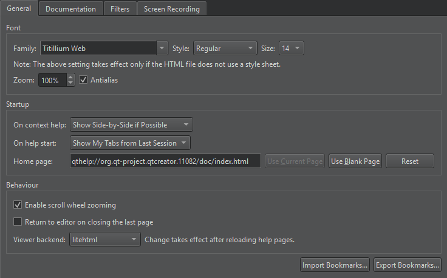

Select the help start page
To set the page to show when you open the Help mode, go to Preferences > Help > General and select On help start.

- To show the page and help views that were open when you exited the mode, select the Show My Tabs from Last Session option. However, Web pages are not opened because loading them would slow down opening the Help mode.
- To show a particular page, select Show My Home Page, and specify the page in Home Page.
- To show a blank page, select the Show a Blank Page option. Select Use Blank Page to set a blank page as your home page.
See also How To: Read Documentation.